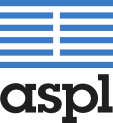

![[content begin]](images/content-begin.png) |
About jsVortexjsVortex is a BEEP implementation written in Javascript to make it easy to integrate with the current web platforms, turning a web browser into an effective BEEP peer without too much effort. At ASPL we think in the value of BEEP as a fully featured development protocol. With jsVortex we think we are approaching to a platform, the web, where the biggest technological changes are happening. At the same time, we think BEEP can improve the development of web Internet applications (RIA) with features highly demanded which aren't available in simple and standard form with current network protocols usually available. About ASPL
Aspl (Advanced Software Production Line) is a Spanish company that provides support and services to introduce open source products into organizations, especially GNU/Linux. ASPL has over 8 years experience and its main development line is to provide software development and support services to install GNU/Linux enterprise servers that provides mail, file and firewall services. Visit our home page at http://www.aspl.es to know more about us. |
![[content end]](images/content-end.png) |
 |
|  |